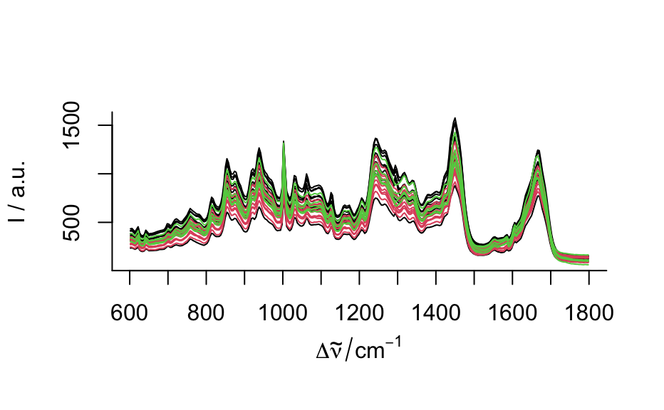

Interface functions to use mvtnorm::rmvnorm() for
hyperSpec-class() objects.
rmmvnorm(n, mean, sigma) # S4 method for numeric,hyperSpec,matrix rmmvnorm(n, mean, sigma) # S4 method for numeric,hyperSpec,array rmmvnorm(n, mean, sigma) # S4 method for numeric,matrix,matrix rmmvnorm(n, mean, sigma) # S4 method for numeric,matrix,array rmmvnorm(n, mean, sigma)
| n | vector giving the number of cases to generate for each group |
|---|---|
| mean | matrix with mean cases in rows |
| sigma | common covariance matrix or array
( |
The mvtnorm method for hyperSpec objects supports producing multivariate
normal data for groups with different mean but common covariance matrix,
see the examples.
cov() and pooled.cov() about calculating covariance
of hyperSpec objects.
## multiple groups, common covariance matrix if (require("mvtnorm")) { pcov <- pooled.cov(faux_cell, faux_cell$region) rnd <- rmmvnorm(rep(10, 3), mean = pcov$mean, sigma = pcov$COV) plot(rnd, col = rnd$.group) }#>